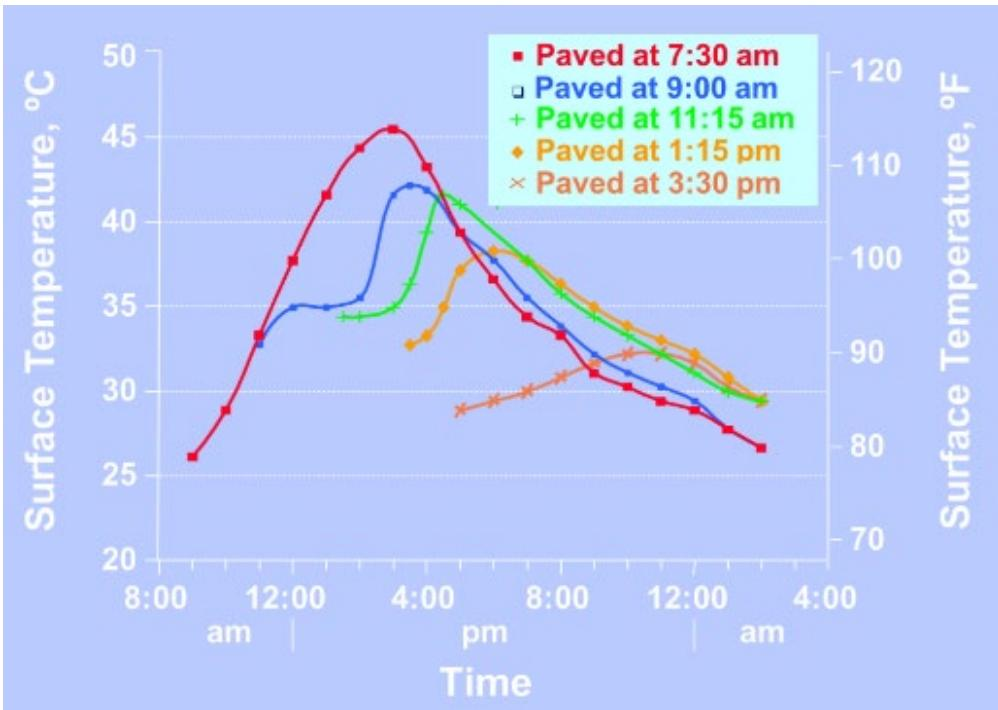
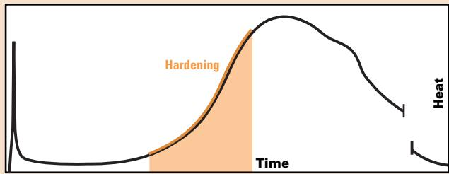

Temperature Impact on Concrete Hydration and Performance
Temperature Impact on Concrete Hydration and Performance is the coordinated set of guidelines and actions that control the thermal environment of fresh concrete so its hydration proceeds within a prescribed temperature window, thereby safeguarding workability, strength gain, and durability [1][2][4]. By continuously monitoring ambient air, surface and mix temperatures together with humidity, wind speed and evaporation rates—and by deploying hot‑weather or cold‑weather mitigations such as night placement, chilled mixing water, fog sprayers, white curing compounds, thermal blankets, supplementary cementitious materials, and appropriate accelerating or retarding admixtures—the program maintains concrete typically between 40 °F and 90 °F (with a minimum of about 50 °F during placement and for at least 72 hours thereafter) [1][5][6]. This systematic temperature‑management prevents the erratic pavement responses—joint movement, slab curling, premature stiffening, loss of strength, and early‑age cracking—that occur when temperature and moisture conditions are ignored [1]
Sources (11)
Purpose and applicability
The method tackles the core problem of concrete pavements behaving erratically when temperature and moisture conditions are not accounted for, which leads to joint movement, slab curling, premature stiffening, loss of strength, and early‑age cracking. The temperature‑impact guidance solves the problem of concrete pavements losing workability, developing excessive shrinkage or thermal cracks in hot conditions and experiencing delayed setting, reduced strength, or freezing damage in cold weather by requiring a Temperature Management Program that monitors ambient and concrete temperatures, evaporation rates, wind, and prescribes actions such as night placement, fog spraying, white curing compounds, thermal blankets, mix adjustments with supplementary cementitious materials or accelerating admixtures, and clear stop‑work thresholds. The temperature impact analysis addresses the problem of under‑estimating concrete pavement stresses and resulting crack openings when construction occurs in warm conditions, prompting designers to adjust overlay thickness or other structural parameters. Across the guides, the unified solution is a systematic approach that keeps concrete within an optimal temperature window (typically 40 °F–90 °F, with a minimum of about 50 °F during placement and for at least 72 hours after placement), employs protective measures against rain and freezing, and integrates monitoring tools (e.g., HIPERPAV) to predict early‑age cracking, thereby preserving workability, strength development, and long‑term durability under both hot and cold extremes. [1][2][4][5][6][7][8][9][10][11]
The figure below illustrates how concrete pavement surface temperatures vary depending on the time of day when paving occurs.

Concrete pavement surface temperatures associated with different paving times [7]The figure plots the surface temperature of concrete pavements over a period spanning from morning to late afternoon and into the next day. Five distinct curves represent different paving times, showing that later placement results in lower peak temperatures and delayed thermal cycles compared to early morning paving. This data illustrates the environmental factors affecting curing and strength development, specifically how elevated ambient temperatures can induce an early set that leads to significant contraction later when it cools.
[1] — Ch. 3 (pp. 61–64), Ch. 6 (pp. 156–178), Ch. 8 (pp. 233–251), Ch. 9 (pp. 271–287); [2] — Ch. 5 (pp. 276–279); [4] — 1. Introduction (pp. 62–63); [5] — Magnesium Phosphate Concrete (p. 43), Weather Limitations (p. 33); [6] — Ch. 4 (p. 81), App. D (p. 146); [7] — Ch. 4 (pp. 104–271); [8] — Ch. 5 (p. 120), Ch. 6 (p. 159), Ch. 8 (p. 199); [9] — 5. Plant Site and Mixture Prod… (p. 84), App. B (pp. 92–94); [10] — Ch. 3 (p. 51), Ch. 5 (p. 106), Ch. 6 (p. 132), Ch. 8 (p. 170); [11] — App. B (pp. 121–123)
Temperature‑impact monitoring is the default approach when ambient and surface temperatures are within the moderate band—generally at least 40 °F and not exceeding 90 °F—and no rain is forecast; under these conditions normal mixing, placing and curing practices provide adequate hydration and strength development.
When hot‑weather thresholds are met—average daily air temperature greater than 77 °F, maximum daily above 85 °F, or more than half of any 24‑hour period at or above 86 °F; concrete temperature approaching or exceeding 85–90 °F; evaporation rates over 0.20 lb/ft²·hr (or 0.10 lb/ft²·hr for mixes with fly ash or slag); and/or low humidity combined with high wind—temperature‑impact control must shift to a hot‑weather management program. This includes night or early‑morning placement, cooling mixing water or aggregates, sprinkling ice, using fog sprayers or evaporation retardants, applying white‑pigmented curing compounds, and adjusting the mix with retarding admixtures or supplementary cementitious materials. If conditions become severe—such as rapid set of magnesium‑phosphate concrete above 32 °C or concrete temperature exceeding project limits—work may be suspended until temperatures are reduced.
When cold‑weather thresholds are encountered—shade or ambient temperature below 50 °F, average daily air temperature under 40 °F for more than three consecutive days, a forecast of any temperature below 32 °F within the next 72 hours, or sub‑base temperature below 32 °F—temperature‑impact alone is insufficient. Cold‑weather procedures are required: heating mixing water and aggregates, using accelerating admixtures (ASTM C494 Type C or E), insulating blankets, and maintaining concrete temperatures at or above 50 °F for at least 48–72 hours while protecting the surface from freezing.
If neither hot nor cold thresholds are triggered, temperature‑impact considerations remain appropriate and standard placement can proceed. When precipitation is imminent rather than extreme temperature, the focus shifts to rain protection measures—plastic sheeting, reduced pour size or postponement—rather than temperature adjustments.
For design calculations, temperature impact must be incorporated when using AASHTOWare Pavement ME Design to obtain the PCC zero‑stress temperature for overlay thickness decisions. Where the software fails to report this value (e.g., CRCP overlays), an alternative calculation method should be employed. [1][2][4][5][6][7][8][9][10]
The following figure illustrates the interface within AASHTOWare Pavement ME Design where these pavement structure parameters are configured.
 Screen Capture of AASHTOWare Pavement ME Design Pavement Structure/Layers Menu. [4]
Screen Capture of AASHTOWare Pavement ME Design Pavement Structure/Layers Menu. [4]
The figure displays the interface for defining pavement structure layers, specifically showing a menu where material properties such as thickness, unit weight, and Poisson’s ratio are entered. It details specific input fields for thermal characteristics including the coefficient of thermal expansion (CTE), which is a critical variable for determining the PCC zero-stress temperature used in overlay thickness decisions.
[1] — Ch. 6 (p. 158), Ch. 8 (pp. 249–251); [2] — Ch. 5 (pp. 276–279); [4] — 1. Introduction (pp. 62–63); [5] — Magnesium Phosphate Concrete (p. 43); [6] — Ch. 4 (p. 81); [7] — Ch. 4 (pp. 105–271); [8] — Ch. 5 (p. 120), Ch. 8 (p. 199); [9] — 5. Plant Site and Mixture Prod… (p. 84), App. B (pp. 92–94); [10] — Ch. 5 (p. 106), Ch. 6 (p. 132)
Required inputs
The guides require that concrete placed in extreme hot‑ or cold‑weather conditions be proportioned with supplementary cementitious materials such as fly ash, slag, ground‑granulated blast‑furnace slag, Class F fly ash, GGBF slag, or natural pozzolans, while limiting the use of high‑early‑strength Type III cement. For hot‑weather work a set‑retarding admixture (verified by trial batches) is incorporated; for cold‑weather work the mix contains reduced SCM content and an accelerating admixture that conforms to ASTM C494 Type C or E. Air‑entraining agents and water‑reducing admixtures are required, and where evaporation rates are high an approved evaporative retardant may be added. Special polymer concretes (MMA or HMWM) and magnesium‑phosphate concrete are permitted for very wide temperature windows, the former usable from 40 °F to 130 °F and the latter providing rapid strength but limited to below about 90 °F.
Mixture properties must meet strict limits: the water‑to‑cement ratio may not exceed the design maximum and total water plus ice cannot be greater than the specified mixing water. Fresh concrete temperature is kept in an optimal range of 50 °F–60 °F, never exceeding 85 °F–90 °F (or ≤90 °F per other guides). In cold weather the concrete must be at least 50 °F at placement and remain ≥50 °F for the first 48‑72 hours; in hot weather chilled mixing water, ice, liquid nitrogen or cooled aggregates are used to lower temperature, while heated water may be added in cold conditions. Temperature of the fresh mix is measured with an ASTM C1064/AASHTO T309 device accurate to ±1 °F and left in the concrete for at least two minutes.
Site‑condition controls include monitoring ambient air temperature, relative humidity, wind speed and surface evaporation rate (thresholds >0.20 lb/ft²·hr, or >0.10 lb/ft²·hr when fly ash or slag are present). Hot weather is flagged when daily maximum exceeds 85 °F or average exceeds 77 °F; cold weather work is limited to shade air ≥50 °F and halted at ≤40 °F (or 35 °F for restart). Mitigation measures are night or early‑morning placement, shading or wetting aggregates, sprinkling stockpiles, keeping the sub‑base damp, using fog sprays or evaporation retardants when needed, applying a white‑pigmented curing compound immediately after finishing, and protecting fresh concrete from freezing for at least 48 hours with blankets, polyethylene sheeting or thermal covers. Continuous temperature monitoring of both concrete and ambient conditions is required throughout placement and early cure. [1][2][4][5][6][7][8][9][10]
[1] — Ch. 6 (pp. 158–178), Ch. 8 (pp. 233–251), Ch. 9 (p. 271); [2] — Ch. 5 (pp. 276–279); [4] — 1. Introduction (pp. 62–63); [5] — Magnesium Phosphate Concrete (p. 43), Methyl Methacrylate Concrete (p. 42), Weather Limitations (p. 33); [6] — Ch. 4 (p. 81); [7] — Ch. 4 (pp. 104–271); [8] — Ch. 5 (p. 120), Ch. 6 (p. 159), Ch. 8 (p. 199); [9] — 5. Plant Site and Mixture Prod… (p. 84), App. B (pp. 92–94); [10] — Ch. 5 (pp. 95–106), Ch. 8 (p. 170)
The guides require a Temperature Management Program that defines hot‑weather and cold‑weather limits, mix‑temperature tolerances, monitoring procedures, and pre‑construction verification steps.
Hot‑weather: placement may not occur when “the maximum daily air temperature exceeds 85°F” or when the average daily temperature is above 77°F or a half‑day temperature not less than 86°F. The concrete itself must be kept below 90°F; many sources state “mix temperature must be kept below 90°F” and “Freshly placed concrete … must not exceed 85 °F to 90 °F at the time of placement”. If the concrete temperature or surface evaporation rate exceeds the limits (“An evaporation‑rate tolerance of 0.2 lb/ft²·hr triggers fog spraying…”, or “hot weather is defined as paving when the concrete temperature is greater than 85˚F or the moisture evaporation rate … greater than 0.20 lb/ft²·hr (0.10 lb/ft²·hr for fly ash or slag)”), paving shall be suspended until temperatures fall below the project‑specified maximum and corrective actions such as chilled water, ice, night placement, fog spraying, or approved evaporative reducers are applied.
Cold‑weather: production and placement must stop when “the air temperature in the shade … drops to 40°F” and may resume only at “35°F or higher”. Concrete may not be placed when “ambient air or substrate temperatures are below 40 °F… unless measures are taken to raise the mix temperature to at least 50 °F”. When ambient is under 50°F, “the concrete must be maintained between 50°F and 75°F when placed.” The slab surface and sub‑base must stay at or above 32°F for 72 hours (or until required strength), and a minimum compressive strength of 500 psi is required before exposure to sub‑40°F conditions. Post‑placement temperature must be maintained at a minimum of 50°F for the first 72 hours, with protection from freezing for at least 48 hours.
Mix design controls: total water and ice added “may not exceed the mixing‑water quantity specified in the approved mix design”; w/c ratio and admixture dosages must stay within the maximum allowable limits. Accelerating admixtures (ASTM C494 Type C or E) and any retarding admixture must be “pre‑qualified by trial batches”. Aggregates must be free of ice, snow, or frozen lumps.
Measurement and monitoring: fresh‑mix temperature is measured “in accordance with ASTM C1064/AASHTO T 309 using a calibrated thermometer accurate to ±1 °F that remains in the mix for at least two minutes or until the reading stabilizes.” Continuous temperature recording is required—sensors placed approximately 2 inches below the surface at the first and last 200 ft of each run, with data logged every 15‑minute (or 30‑minute) interval. Evaporation rate must be recorded hourly (or at thirty‑minute intervals).
Pre‑construction tests: before any work begins a “daily temperature check” is performed; “Temperature tolerance: 40°F ≤ air & surface ≤ 90°F.” The crew must also “review manufacturer installation instructions for requirements specific to the patch/repair material used” and verify that “air and surface temperature meets manufacturer and contract requirements (typically 4°C or 40°F and above).” If conditions are outside limits or rain is imminent, placement is delayed. Polyethylene sheeting or other coverings must be ready to protect fresh concrete when precipitation cannot be avoided.
Design dimension adjustments: for concrete overlays the “PCC zero‑stress temperature… can be entered … or estimated from the construction month.” When the predicted zero‑stress temperature rises to about 100°F (e.g., June), “the required overlay thickness needs to be increased from 8.0 in. to 8.5 in.” Slab thickness and surrounding insulation are also considered to control heat loss in cold weather.
Strength verification: before opening to traffic, strength is confirmed by “maturity‑method calculations, temperature‑matched curing, nondestructive testing, or core extraction” as required by the quality‑control plan.
These combined requirements constitute the design details, dimensional controls, tolerances, and pre‑construction tests that govern temperature impact on concrete hydration and performance. [1][2][4][5][6][7][8][9][10]
[1] — Ch. 6 (pp. 158–159), Ch. 8 (pp. 233–251), Ch. 9 (pp. 271–287); [2] — Ch. 5 (pp. 276–279); [4] — 1. Introduction (pp. 62–63); [5] — Weather Limitations (p. 33); [6] — Ch. 4 (p. 81); [7] — Ch. 4 (pp. 105–271); [8] — Ch. 5 (p. 120), Ch. 6 (p. 159), Ch. 8 (pp. 199–207); [9] — 5. Plant Site and Mixture Prod… (p. 84), App. B (pp. 92–94); [10] — Ch. 5 (p. 106), Ch. 6 (p. 132), Ch. 8 (p. 170)
Equipment and personnel
The guides outline a complete equipment set for managing temperature effects on concrete paving. For preparation, aggregates are required to be free of ice and snow (“Aggregates must be free of ice, snow, and frozen lumps before being placed in the mixer”) and heating devices may be used to raise mix water or aggregates up to 150 °F (“The mixture water and/or aggregates may be heated to 150°F”). A water truck is employed to pre‑wet the subbase (“A water truck shall be utilized to sprinkle the subbase ahead of the area where concrete is deposited”). During placement, non‑agitating dump trucks transport the mix (“Non‑agitating dump trucks will be used for all placements”) and a slipform paver both places and consolidates the pavement (“consolidate and extrude the pavement using a slipform paver”). Heated water supplied at the paver head maintains fresh concrete above 50 °F (“Heated water shall be used to maintain the concrete temperature above 50˚F as measured directly in front of the paver.”). Fog sprayers or evaporative retardants are kept on hand for finishing behind the paving machine (“fog sprayers or evaporative retardants”). Hand finishing is completed with floats and straightedges (“hand finishing using floats and straightedges”). Curing protection includes insulating, thermal and curing blankets, weighted plastic sheeting, a layer of polyethylene sheeting, and burlap as required (“Insulating blankets also are necessary for curing concrete pavement in cool weather”, “thermal blankets”, “plastic sheeting”, “The pavement shall be covered with one layer of polyethylene sheeting and two layers of burlap or curing blankets”). A white pigmented curing compound is applied after placement to reflect heat (“white pigmented curing compound”), and an evaporation retardant is used when the evaporation rate exceeds specified limits (“When the evaporation rate exceeds 0.20 lb/ft2 /hr (0.10 lb/ft2 /hr for concrete mixtures containing fly ash or slag) and the curing application is more than 20 minutes behind the texturing operation, an evaporation retardant will be used”). Temperature monitoring equipment—ambient sensors, embedded temperature probes logging at fifteen‑minute intervals, and maturity or nondestructive testing devices for strength verification—is required to guide decisions and confirm performance (“Temperature sensors that record the temperature of the pavement at 15 minute intervals will be placed in the edge of the pavement approximately 2 inches below the surface”, “Strength verification employs maturity monitoring or nondestructive testing equipment, or core sampling, before traffic is allowed”). [1][2][9]
[1] — Ch. 8 (p. 251); [2] — Ch. 5 (pp. 276–279); [9] — App. B (pp. 92–94)
The crew must include competent contractors who are trained and experienced in hot‑weather (ACI 2010a) and cold‑weather (ACI 2010b) concrete construction and capable of implementing an extreme‑weather management plan. A qualified QC planner prepares a CQCP that spells out the duties of the batching, transport, placement, finishing and curing crews and designates a crew supervisor to direct those operations under hot or cold conditions. All crew members must be trained to monitor ambient and fresh‑concrete temperatures, record hourly evaporation rates, and operate fog sprayers, evaporative retardants, chillers, or thermal blankets when temperature thresholds are exceeded. The crew includes a water‑truck operator to keep the subbase damp and sprinkle side forms so surface temperatures stay below the hot‑weather limit, a slipform‑paver operator who consolidates and extrudes the pavement, hand finishers equipped to float, straightedge, texture and cure the concrete, and saw operators ready to perform joint cutting at the accelerated rate dictated by early strength. Personnel are required to monitor ambient humidity, concrete temperature and wind speed at thirty‑minute intervals, calculate evaporation rates, and apply an evaporation retardant when those rates exceed specified thresholds or when curing lags more than twenty minutes behind texturing. In cold weather the crew must include personnel trained to deploy thermal blankets promptly once shade temperatures drop below 40 °F and to maintain slab temperature above 50 °F for at least 72 hours, with continuous temperature checks to prevent freezing. QC staff also ensures sufficient equipment and qualified operators are on‑site to execute these measures in accordance with FAA/DOD specifications. [1][2][9]
[1] — Ch. 3 (p. 64); [2] — Ch. 5 (pp. 276–279); [9] — App. B (pp. 92–93)
Work sequence
Before any temperature‑impact procedures can be initiated, the project team must complete a set of preparatory actions:
-
Verify the concrete mix for the anticipated hot or cold conditions during the mix‑design phase by conducting laboratory trial batches at temperatures representative of the site. Modify the mix to limit heat generation—use supplementary cementitious materials, avoid high‑early‑strength Type III cement, consider set‑retarding admixtures and cool the fresh concrete with chilled water, ice or cooled aggregates.
-
Review the manufacturer’s installation instructions for the specific repair/patch material and confirm that both air and surface temperatures satisfy the required minimum (typically 4 °C / 40 °F and not exceeding about 90 °F) as stipulated by contract or agency specifications. Ensure that rain is not imminent; postpone work if precipitation is expected.
-
Develop a comprehensive Quality Control plan that incorporates a Temperature Management Program or weather‑management strategy. The plan must detail crew actions for inclement weather and provide guidance on batching, transporting, mixing, placing, finishing, joint sawing and curing, including adjustments for hot‑weather concreting, cold‑weather concreting, evaporation control, and rain protection.
-
Select the project location (nearest city) to enable calculation of an effective temperature gradient and establish a PCC zero‑stress temperature, either entered directly into design software or estimated from the construction month.
-
Collect current environmental data—air temperature, relative humidity, concrete temperature, wind velocity—and input them into the appropriate evaporation nomograph or modeling tool. Gather the four required inputs (ambient temperature, wind speed, humidity and cloud cover) using up‑to‑date forecast information.
-
Prepare site‑specific weather controls well in advance: schedule evaporation‑reduction measures for hot weather, freeze‑protection for cold weather, and surface protection for rain events. Recognize early‑age thermal cracking risks; if conditions become severe, suspend paving or adjust placement timing.
-
Ensure the subbase is uniformly dampened with a water truck, free of standing water. Keep fresh concrete above 50 °F by using heated water (and an approved accelerator where permitted) and verify that the subbase temperature is at least 32 °F before placement. Apply a curing compound immediately after finishing and protect the slab from rapid ambient temperature changes with blankets or polyethylene sheets.
Only after these prerequisites are satisfied can the temperature‑related hydration and performance methods commence. [1][2][4][5][6][7][8][9][10][11]
[1] — Ch. 6 (pp. 177–178), Ch. 8 (pp. 249–251); [2] — Ch. 5 (pp. 276–279); [4] — 1. Introduction (pp. 42–63); [5] — Weather Limitations (p. 33); [6] — Ch. 4 (p. 81), App. D (p. 146); [7] — Ch. 4 (pp. 105–107); [8] — Ch. 5 (p. 120), Ch. 8 (p. 207); [9] — 5. Plant Site and Mixture Prod… (p. 84), App. B (pp. 92–94); [10] — Ch. 5 (p. 106), Ch. 6 (p. 132), Ch. 8 (p. 170); [11] — App. B (pp. 121–123)
- Review the manufacturer’s installation instructions and contract specifications to confirm that ambient air and surface temperatures are within the allowed range (commonly at least 40 °F and not above 90 °F).\
- Assess current ambient conditions using a nomograph or similar tool: enter the air temperature, move upward to the relative‑humidity curve, proceed horizontally to the concrete‑temperature scale, then down to the wind velocity and read the approximate evaporation rate.\
- Verify that the mix design does not exceed the maximum allowable water‑to‑cement ratio or the manufacturer’s recommended dosage of any admixture.\
- When hot weather is indicated (air temperature > 85 °F, average > 77 °F, or evaporation rate > 0.20 lb/ft²·hr), activate a Temperature Management Program, predict tensile strains in the fresh concrete, and schedule joint‑sawing timing; adjust the mix by adding supplementary cementitious materials or retarding admixtures while keeping the approved water‑to‑cement ratio and air content within limits.\
- Cool the fresh mix as needed: “chill the mixing water or add ice” (ensuring total water + ice does not exceed the design water), moisten dry, absorptive aggregates and, if necessary, sprinkle water on aggregate stockpiles, paint equipment a light colour, and consider night placement, pre‑wetting the base, fog sprayers, evaporative retardants, or white curing compound to keep concrete temperature below ninety degrees Fahrenheit.\
- Prepare the site: dampen the subgrade, erect temporary windbreaks, install sunshades or other shading devices, and keep side forms below 120 °F by sprinkling; verify subbase temperature is ≥ 32 °F and keep it damp with a water truck.\
- “Avoid placing concrete during the hottest part of the day”; if necessary shift placement to cooler periods such as overnight.\
- Place the concrete while continuously monitoring fresh‑concrete temperature and evaporation rate. If the evaporation rate exceeds the specified limit, “apply a more aggressive curing method such as fog spraying or an approved evaporative reducer.”\
- Immediately after finishing, “apply curing compound immediately after finishing is complete” and protect the slab with insulating blankets or polyethylene sheets when rapid cooling is expected.\
- For cold‑weather placement, first confirm mix suitability by using a higher Portland cement content and a verified non‑chloride accelerating admixture; ensure all aggregates are free of ice, snow, or frozen lumps before entering the mixer, and “heat the mixing water (and optionally the aggregates) so that the fresh‑concrete temperature does not fall below 50 °F.”\
- Place concrete only when air and substrate temperatures meet specified limits, then “place thermal blankets without delay once the temperature declines to the level halting production.” Keep blankets in place for a minimum of forty‑eight hours (some specifications require seventy‑two hours) while maintaining slab temperature ≥ 50 °F and above freezing thereafter.\
- Continuously monitor slab temperature; maintain it at or above 50 °F for at least 72 hours and never allow it to drop below freezing until the concrete reaches the required strength (≈3,000 psi or 1,500 psi depending on specification).\
- When joint‑sawing is required, uncover only the slab directly ahead of the saw to avoid rapid cooling; coordinate sawing with insulation removal as needed.\
- Verify strength by maturity testing, nondestructive testing, or core testing before opening to traffic; remove blankets only after the slab has cooled sufficiently to avoid thermal shock. [1][2][6][7][8][9]
[1] — Ch. 6 (pp. 177–178), Ch. 8 (pp. 233–251); [2] — Ch. 5 (pp. 276–279); [6] — Ch. 4 (p. 81); [7] — Ch. 4 (pp. 105–108); [8] — Ch. 5 (p. 120); [9] — 5. Plant Site and Mixture Prod… (p. 84), App. B (pp. 92–94)
Apply the white pigmented curing compound immediately after final finishing while the surface is still damp. Measure fresh‑concrete temperature with the probe in the mix for at least two minutes or until the reading stabilizes before proceeding. In hot weather (above about 32 °C/90 °F) the mix can reach initial set within roughly ten to fifteen minutes, so any work that depends on plasticity must be finished before this short interval elapses, and curing actions (e.g., applying an evaporation retardant) must begin no later than twenty minutes after the pavement is textured. After placement, keep the concrete temperature at or above 50 °F (10 °C) for a minimum of 72 hours; thermal blankets placed immediately after placement must remain in place for at least that period. In cold weather the slab surface temperature shall also be maintained at or above freezing (32 °F) for a period of 72 hours or until the concrete attains the required compressive strength, and the fresh slab must be protected from freezing for at least 48 hours before coverings are removed for joint sawing. Production and placement must be halted when shade air temperature falls to 40 °F and may not resume until shade temperature rises to at least 35 °F and is expected to continue rising, with concrete temperature required to be no lower than 50 °F during placement. Monitor the slab during the first four to eight hours after paving, which is the typical window for peak heat of hydration. [1][2][5][6][7][9]
The following figure illustrates the significant heat generated during this critical hardening stage.

Heat generation during the hardening stage of concrete hydration. [1]The figure displays a graph plotting heat against time, highlighting an orange shaded region labeled ‘Hardening’ where the curve rises to a peak.
[1] — Ch. 6 (pp. 159–178), Ch. 8 (p. 251), Ch. 9 (p. 271); [2] — Ch. 5 (pp. 276–279); [5] — Magnesium Phosphate Concrete (p. 43); [6] — Ch. 4 (p. 81); [7] — Ch. 4 (pp. 104–108); [9] — 5. Plant Site and Mixture Prod… (p. 84), App. B (pp. 92–94)
Staging and logistics
The guides require that work‑zone logistics be coordinated around ambient temperature so that concrete temperatures stay within specified limits. “The mixture temperature should be kept below 90°F” and, for hot‑weather conditions, “Hot weather paving is defined as paving when the concrete temperature is greater than 85˚F or the moisture evaporation rate at the concrete surface is greater than 0.20 lb/ft2 /hr”. To meet these limits the operation times are shifted to cooler periods—often overnight—as noted by “Paving during cooler times of day (such as overnight) can help ensure that adequate concrete temperatures are maintained during placement”. Chilled water is applied directly in front of the paver; the guidance states, “Chilled water shall be used to prevent the concrete temperature from exceeding XX˚F as measured directly in front of the paver.” When the concrete temperature reaches the maximum allowed, “Mixing Requirements - Paving will be suspended when the concrete temperature exceeds XX˚F” until cooling actions restore compliance. Aggregate stockpiles are treated to reduce heat gain: “sprinkling stockpiles to cool aggregates” and “Aggregate stockpiles may be sprinkled lightly to cool the outside of the stockpile.” All deliveries use non‑agitating dump trucks, which together with these cooling measures keep material delivery, equipment movement, and traffic flow on access routes within prescribed thermal tolerances. In cold weather the fresh pavement must be insulated from freezing; the guidance requires that “the concrete should be protected from freezing for at least 48 hours after placement using coverings”—covers are briefly removed for joint sawing then replaced—to avoid rapid cooling‑induced cracking. Across both temperature extremes, work‑zone scheduling, stockpile management, access‑route planning, and equipment deployment are adjusted to maintain concrete performance within the required limits. [6][9]
[6] — Ch. 4 (p. 81); [9] — App. B (p. 92)
Across the guides, space, site‑access, weather and environmental conditions are identified as the primary constraints on concrete hydration and performance. The jobsite must provide unrestricted early‑morning or night access so that placement can be shifted to cooler periods, and sufficient open area for temporary windbreaks, sunshades, fog‑spraying equipment, heated water or aggregate storage, insulation blankets, polyethylene sheets and rain shields. Adequate drainage and protection from precipitation are required until the concrete reaches sufficient strength.
Temperature is the dominant weather factor. “Hydration will stop when the temperature is close to 32°F,” so placement must occur within a thermal window that typically requires air and surface temperatures of at least 40 °F (4 °C) and not exceeding 85‑90 °F for most mixes; an optimal range for freshly placed concrete is “50°F to 60°F, and it should not exceed 85°F to 90°F at time of placement.” In hot weather the slab must be kept below the maximum mixture temperature – “The mixture temperature should be kept below 90°F” – by night‑time placement, chilled mixing water, ice or aggregate sprinkling, fog spraying, evaporation reducers, windbreaks and white curing compounds applied while the surface is still damp. When the evaporation rate exceeds 0.2 lb/ft²·hr (or 0.10 lb/ft²·hr for fly‑ash/slag mixes) “it is advisable to provide a more effective curing application such as fog spraying or to apply an approved evaporation reducer.” Solar radiation and wind further accelerate surface cooling or heating, so shading and protective blankets are required.
In cold weather the slab must be kept above freezing; the guides require that “the concrete temperature should be maintained at 50°F or above for at least 72 hours after placement” and remain above freezing for the remainder of curing. This is achieved with thermal blankets, polyethylene sheeting, burlap, heated water, low‑SCM or accelerating admixtures, and continuous temperature monitoring (sensors accurate to ±1 °F, recorded every half hour). Placement must be halted if ambient shade temperatures fall below 40 °F (FAA) or 35 °F (DOD), and the sub‑base must be at least 32 °F before work begins.
Precipitation imposes an immediate environmental constraint: when rain is forecast, “adequate amounts of plastic sheeting should be on hand to cover the fresh concrete and protect it from rain,” and any newly placed surface must be shielded until dry conditions return. Sudden temperature shifts, such as a fast‑moving storm front, are also flagged because they create steep gradients that increase early‑age thermal cracking risk.
The construction month influences the zero‑stress temperature of the pavement; higher ambient temperatures in summer raise the predicted zero‑stress temperature and may require increased overlay thickness to control crack openings. Consequently, accurate short‑term forecasts of ambient temperature, wind speed, humidity and cloud cover (the four HIPERPAV inputs) are essential for deciding whether site access must be limited, protective measures applied, or work postponed.
Overall, the combined constraints dictate that concrete placement be scheduled only when temperature, wind, humidity and precipitation fall within specified limits, that the site provide space and unrestricted access for protective equipment, and that continuous monitoring and appropriate mitigation (cooling, heating, shading, curing compounds, blankets, sheeting) be employed to sustain hydration and achieve desired strength and durability. [1][2][4][5][6][7][8][9][10][11]
[1] — Ch. 3 (pp. 61–64), Ch. 6 (pp. 156–178), Ch. 8 (pp. 233–251), Ch. 9 (pp. 271–287); [2] — Ch. 5 (pp. 276–279); [4] — 1. Introduction (pp. 62–63); [5] — Magnesium Phosphate Concrete (p. 43), Methyl Methacrylate Concrete (p. 42), Weather Limitations (p. 33); [6] — Ch. 4 (p. 81), App. D (p. 146); [7] — Ch. 4 (pp. 104–271); [8] — Ch. 5 (p. 120), Ch. 6 (p. 159), Ch. 8 (pp. 199–207); [9] — 5. Plant Site and Mixture Prod… (p. 84), App. B (pp. 92–94); [10] — Ch. 5 (pp. 95–106), Ch. 6 (p. 132), Ch. 8 (p. 170); [11] — App. B (pp. 121–124)
Quality control and acceptance
Inspection of temperature impact on concrete hydration and performance must verify a comprehensive set of temperature‑related characteristics. Fresh‑mix temperature is measured in accordance with “ASTM C1064/AASHTO T 309” using a device that “must be accurate to ±1.0°F and must remain in the concrete for at least 2 minutes or until the temperature stabilizes”; continuous monitoring “on the grade ahead of the paver” is required. The temperature must stay within agency limits – typically an optimal range of “50°F to 60°F”, never exceeding “85°F to 90°F” and certainly not above “90°F” – and be maintained at or above 50 °F for at least 72 hours after placement while the slab is protected from freezing for a minimum of 48 hours.
Thermal gradients and resulting deformations are recorded, including “concrete thermal gradients, slab curvature, moisture warping, joint and crack opening/ closing, temperature effects on asphalt base modulus, freezing index, and number of freeze‑thaw cycles”, as well as “Opening and closing of transverse joints” and “Upward and downward curling of the slab” caused by daily temperature cycling.
Hydration rate indicators such as “Rapid slump loss”, “Reduced air contents” and “Premature stiffening” are noted, recognizing that higher temperatures accelerate set time while lower temperatures retard it.
Air‑entrainment and admixture performance are checked: additional testing is planned when admixture dosages change, and the “air‑entraining admixture dosage” is adjusted to achieve the specified air content at low concrete temperatures. The mix design parameters – water‑to‑cement ratio, total cement content, early‑strength cement, high CTE coarse aggregate and maximum allowable w/c ratio – are verified; aggregates must be free of ice, snow or frozen lumps.
Environmental inputs required for early‑age behavior include the four HIPERPAV factors – ambient temperature, wind speed, humidity and cloud cover – together with continuous logging of ambient temperature, relative humidity, wind velocity and evaporation rate. Evaporation must not exceed 0.2 lb/ft²·hr (or 0.10 lb/ft²·hr when fly ash or slag is present); if the threshold is exceeded, “it is advisable to provide a more effective curing application such as fog spraying or to apply an approved evaporation reducer.”
Protection and curing actions encompass maintaining sub‑base temperatures ≥ 32 °F, keeping side‑form surfaces below 120 °F, applying moisture‑retarding measures when evaporation rates are high, and ensuring that plastic shrinkage cracking is prevented. Finally, in‑place strength is verified by maturity methods, temperature‑matched curing, nondestructive testing or core extraction before opening the pavement to traffic. [1][2][5][6][7][8][9][10][11]
The figure below illustrates how in-place pavement maturity is monitored to verify strength development.
 In-place pavement maturity curve showing Time-Temperature Factor (TTF) versus elapsed time. [11]
In-place pavement maturity curve showing Time-Temperature Factor (TTF) versus elapsed time. [11]
The figure displays a graph plotting the Time-Temperature Factor (TTF) in °C·h against elapsed time in days, illustrating how thermal history accumulates over the curing period. This data supports concrete temperature management by providing a nondestructive method to estimate early-age strength based on the hydration process, ensuring that curing actions maintain the thermal environment necessary for proper performance.
[1] — Ch. 3 (p. 61), Ch. 6 (pp. 156–158), Ch. 8 (pp. 249–251), Ch. 9 (pp. 271–287); [2] — Ch. 5 (pp. 276–279); [5] — Magnesium Phosphate Concrete (p. 43), Methyl Methacrylate Concrete (p. 42), Weather Limitations (p. 33); [6] — Ch. 4 (p. 81), App. D (p. 146); [7] — Ch. 4 (pp. 104–271); [8] — Ch. 5 (p. 120), Ch. 6 (p. 159), Ch. 8 (pp. 199–207); [9] — 5. Plant Site and Mixture Prod… (p. 84), App. B (pp. 92–94); [10] — Ch. 3 (p. 51), Ch. 5 (p. 106), Ch. 6 (p. 132), Ch. 8 (p. 170); [11] — App. B (pp. 121–123)
The guides agree that temperature monitoring starts before any concrete is placed – measurements are taken immediately prior to the start of the construction project and again when the fresh mix is placed. Once placement begins, continuous or periodic readings are required: some sources call for continuous monitoring with probes left in the concrete until the temperature stabilizes (at least two minutes), while others specify regular intervals such as every 30 minutes during placement, every 15 minutes using automated data loggers, or hourly recordings from weather forecasts for the first 30 hours of early‑age curing. In hot‑weather operations the frequency is increased beyond normal practice, with readings taken more frequently than under normal conditions to support real‑time decisions on cooling measures; in cold‑weather work temperature sensors are installed at the pavement edge and log data at 15‑minute intervals until a target maturity (e.g., 1,500 psi) is reached. For longer‑term repairs the crew records air and surface temperatures each day for the duration of the repair, and on DOD projects the evaporation rate must be recorded and reported hourly. [1][2][8][9][10][11]
[1] — Ch. 9 (p. 271); [2] — Ch. 5 (pp. 276–279); [8] — Ch. 5 (p. 120), Ch. 6 (p. 159), Ch. 8 (pp. 199–207); [9] — App. B (pp. 92–94); [10] — Ch. 3 (p. 51), Ch. 6 (p. 132); [11] — App. B (pp. 121–123)
The acceptance criteria for temperature‑sensitive paving are defined by several measurable limits. For hot‑weather work the guides require that “the concrete’s evaporation rate must remain at or below 0.2 lb/ft²·hr” and that “The mixture temperature should be kept below 90°F”. In addition, ambient conditions are considered hot when “maximum daily air temperature exceeds 85 °F (or average >77 °F)”. If any of these thresholds are exceeded the work is non‑conforming.
Corrective actions for hot‑weather non‑conformance include applying a more effective curing method such as fog spraying or an approved evaporation reducer (“If the evaporation rate exceeds 0.2 lb/ft2/hr, it is advisable to provide a more effective curing application such as fog spraying or to apply an approved evaporation reducer.”), cooling the mix with chilled water or ice and rescheduling placement for cooler periods, and, when conditions remain severe, halting paving until weather improves.
Cold‑weather acceptance criteria are likewise explicit. Placement is prohibited when “shade temperatures fall below 50 °F, with concrete placement prohibited below 40 °F and only resumed once the shade temperature rises to at least 35 °F.” When ambient air is under 50 °F, “the concrete must be maintained between 50°F and 75°F when placed,” and the concrete temperature measured at the paver must stay above 50 °F (“Heated water shall be used to maintain the concrete temperature above 50˚F as measured directly in front of the paver.”). The subbase must be at least 32 °F and the pavement surface must remain at or above 32 °F for a minimum of 72 hours or until a compressive strength of 1,500 psi is achieved (“Concrete pavement surface temperature shall be maintained at or above 32˚F for a period of 72 hours or until in-place concrete compressive strength of 1,500 psi is attained.”). Additionally, the slab must be protected from freezing for at least 48 hours after placement (“the concrete should be protected from freezing for at least 48 hours after placement using coverings”).
When any cold‑weather limit is violated, the guides prescribe a set of corrective measures: stop production and apply thermal blankets or curing blankets to keep the slab above 50 °F for at least 72 hours; use heated water and, where permitted, an accelerating admixture while prohibiting mixes that contain Class F fly ash or slag; cover the surface with polyethylene sheeting plus burlap or other approved curing blankets and monitor temperature until maturity is reached. Increased monitoring of temperatures and evaporation rates is also required.
For rain‑induced damage to an unprotected pour, the corrective action is specific: “If the finish of unprotected concrete pavement has been damaged by rain, it should not be refinished but should instead be grooved using saws.”
These criteria, tolerances, and remedial steps constitute the accepted practice across the referenced guides for managing non‑conforming work under extreme temperature conditions. [1][2][6][9]
[1] — Ch. 8 (pp. 249–250); [2] — Ch. 5 (pp. 276–279); [6] — Ch. 4 (p. 81); [9] — App. B (pp. 93–94)
Safety and environmental controls
Temperature extremes during concrete placement create multiple safety hazards for both crews and future road users. In hot weather the mix loses slump, drops air content and hardens faster, which promotes plastic shrinkage and thermal cracking that can leave sharp or uneven surfaces posing slip and trip risks to workers and the public; the accelerated setting also shortens the workable period, forcing crews to work rapidly under high concrete temperatures and increasing exposure to heat stress. When ambient temperatures exceed about 95 °F, rapid set and thermal gradients cause slab curling and internal stresses that lead to early‑age or plastic shrinkage cracking, reducing structural integrity and creating sudden loss of strength that endangers personnel handling the material and motorists encountering cracked pavement. Hot, dry, windy conditions further heighten the likelihood of plastic shrinkage. Conversely, low ambient temperatures slow the hydration reaction, extending the period during which the concrete remains plastic; freezing of the pore solution or of the fresh mix—particularly at corners and edges—can cause permanent damage and create trip hazards. Delayed strength development may tempt premature opening to traffic, exposing users to unsafe surfaces. Workers also face thermal injury risks: water or aggregates heated up to 150 °F can cause burns, while icy or frozen aggregates present slip and contamination hazards during mixing and placement. In cold weather the slowed chemical reaction reduces early strength, so if the slab freezes it can lose integrity, creating a risk of sudden failure or collapse that endangers personnel and aircraft traffic. Premature stress rise due to temperature‑driven hydration can cause early‑age cracking, making saw‑cutting operations unsafe and exposing the public to potential pavement failure. [1][2][7][11]
[1] — Ch. 6 (p. 158), Ch. 8 (p. 251), Ch. 9 (pp. 271–287); [2] — Ch. 5 (pp. 276–279); [7] — Ch. 4 (pp. 270–271); [11] — App. B (pp. 121–123)
Curing, protection, and handoff
The completed pavement is protected and cured by immediately applying a white‑pigmented curing compound while the surface remains damp, which both retains moisture and reflects solar heat. In hot conditions the evaporation rate is monitored; when it exceeds the critical threshold, fog spraying or an approved evaporation reducer is applied to limit moisture loss and prevent plastic‑shrinkage cracking. Cold‑weather protection consists of covering the fresh slab with insulating blankets—often combined with polyethylene sheeting—to retain heat, keep the concrete temperature at or above 50 °F (or at least above freezing) for the required period (minimum 48–72 hours), and to maintain a minimum temperature of 32 °F until strength development. When rain is imminent, the surface is shielded with weighted polyethylene sheeting or tarps; the cover is removed only briefly for joint sawing and then replaced. Continuous temperature monitoring ensures that the slab remains within the prescribed limits throughout the curing period. [1][2][6][7][8][9]
[1] — Ch. 6 (pp. 159–178), Ch. 8 (pp. 249–251); [2] — Ch. 5 (pp. 276–279); [6] — Ch. 4 (p. 81); [7] — Ch. 4 (pp. 105–271); [8] — Ch. 6 (p. 159); [9] — 5. Plant Site and Mixture Prod… (p. 84), App. B (pp. 92–94)
The guides agree that concrete placed in cold weather must remain above a minimum temperature for a continuous 72‑hour period before construction traffic is allowed. Two of the guides require the slab to be kept at “50 °F or above for at least 72 hours after placement and at a temperature above freezing for the remainder of the curing time,” and they add that opening may be delayed until the concrete attains the required compressive strength (approximately 3,000 psi). The third guide permits traffic once the surface has been maintained “at or above 32˚F for a period of 72 hours or until in‑place concrete compressive strength of 1,500 psi is attained,” after which protective insulation may be removed and the pavement opened according to specifications. In all cases the guides require confirming that the in‑place strength has been achieved—“Verify the in‑place strength by a maturity method, temperature‑matched curing, nondestructive testing (NDT), or tests of cores from the pavement before opening the pavement to traffic.” [1][7][9]
[1] — Ch. 8 (p. 251); [7] — Ch. 4 (pp. 107–108); [9] — App. B (pp. 93–94)
Expected performance and maintenance
The guides identify a consistent set of temperature‑related distresses that can develop in concrete pavements. Elevated ambient temperatures and rapid drying promote plastic shrinkage cracking, thermal cracking, premature stiffening, and rapid slump loss, while high evaporation rates (If the evaporation rate exceeds 0.2 lb/ft2/hr) further increase the danger of plastic shrinkage cracking. Thermal gradients through the slab generate curling or warping (Upward and downward curling of the slab due to daily cycling of the temperature gradient through the slab thickness; Thermal gradients in the slab result in curling, which increases the internal stresses in the slab and may cause early‑age cracking), leading to joint movement (Opening and closing of transverse joints in response to daily and seasonal variation in slab temperature, resulting in fluctuations in joint load‑transfer capability). Low temperatures retard hydration (low temperatures may slow hydration, and thus strength gain) and can freeze the pore solution (pore solution in fresh concrete may freeze, causing permanent damage), producing freeze‑thaw damage to aggregates and early‑age cracking when the slab cools rapidly or freezes within the first 48 h. Cold‑induced thermal contraction cracking is also noted (Thermal contraction cracking is related to the environmental conditions at the time of construction). In continuously reinforced concrete slabs, temperature drops below the zero‑stress temperature cause existing cracks to open and widen (cracks in the CRCP open when the concrete temperature drops below the PCC zero‑stress temperature; Paving during the summer months results in high zero‑stress temperatures and wider crack openings when the temperature drops). Rapid cooling from rain or wind can induce differential thermal stresses that lead to cracking (Rain can also cause rapid cooling of the slab surfaces inducing differential thermal stresses and an increased risk potential for cracking). Early‑age stress exceeding strength is predicted by HIPERPAV modeling, highlighting the risk of cracking before saw‑cutting (HIPERPAV predicts that the stress will exceed the strength three hours earlier for the analysis that is based on the forecast environmental conditions). [1][2][4][6][7][9][11]
[1] — Ch. 3 (p. 61), Ch. 6 (pp. 158–178), Ch. 8 (pp. 249–251), Ch. 9 (pp. 271–287); [2] — Ch. 5 (pp. 276–279); [4] — 1. Introduction (pp. 62–63); [6] — Ch. 4 (p. 81); [7] — Ch. 4 (pp. 104–271); [9] — 5. Plant Site and Mixture Prod… (p. 84), App. B (pp. 92–93); [11] — App. B (pp. 121–123)
Preventive maintenance for temperature‑sensitive concrete paving begins with a comprehensive weather‑management program that continuously measures ambient air temperature, relative humidity, wind velocity and the temperature of fresh concrete (using an ASTM C1064/AASHTO T 309 calibrated thermometer accurate to ±1 °F) is required. Concrete temperature is recorded at regular intervals (e.g., every 15–30 minutes) with sensors placed near the paver and on slab edges. When hot‑weather limits are approached—air temperatures above 85 °F, concrete temperature exceeding 90 °F, or evaporation rates greater than 0.2 lb/ft²·hr—the mix is cooled by chilled water, ice, sprinkling aggregates, wetting the subgrade, shading the area, or night placement; fog sprayers or approved evaporative reducers are applied and placement may be halted. The mix design incorporates supplementary cementitious materials, limits high‑early‑strength cements, and uses set‑retarding admixtures verified by trial batches to keep the concrete within an optimal range of 50 °F to 60 °F and not exceed 85 °F–90 °F at placement; “the mixture temperature should be kept below 90°F”. A white pigmented curing compound should always be applied immediately after final finishing while the surface is still damp to alleviate evaporation and reduce heat build‑up from solar radiation, and rigorous curing practices—including rapid placement, early curing‑compound application, windbreaks, and moisture‑retaining covers—are maintained to limit plastic shrinkage and curvature. In cold weather the concrete temperature must be maintained at ≥50 °F for at least 72 hours after placement and above freezing thereafter; heating of mixing water, aggregates or the jobsite, use of insulating blankets, thermal blankets, and polyethylene sheeting protect the slab from freezing for a minimum of 48–72 hours. Production is stopped if shade temperatures fall below 40 °F (or 35 °F on certain projects). Accelerating admixtures that conform to ASTM C494 Type C or E are used only after performance verification, while air‑entraining dosages are reduced and chlorides are prohibited. Monitoring continues through early‑age cracking risk assessment tools such as HIPERPAV, which evaluates tensile strains, joint movement, slab curling and moisture loss. Strength development is verified by maturity methods, nondestructive testing or core testing before traffic loading. When plastic‑shrinkage, thermal cracks, or joint distress are detected, repairs consist of sealant injection, patching with a compatible mix, corrosion mitigation for exposed reinforcement, joint sealing, or overlay as required. Regular inspection of drainage systems prevents base erosion and reinforcement corrosion, completing the preventive maintenance cycle. [1][2][5][6][7][8][9][10]
[1] — Ch. 3 (pp. 61–64), Ch. 6 (pp. 158–178), Ch. 8 (pp. 233–251), Ch. 9 (pp. 271–287); [2] — Ch. 5 (pp. 276–279); [5] — Weather Limitations (p. 33); [6] — Ch. 4 (p. 81); [7] — Ch. 4 (pp. 105–271); [8] — Ch. 5 (p. 120), Ch. 6 (p. 159), Ch. 8 (p. 199); [9] — 5. Plant Site and Mixture Prod… (p. 84), App. B (pp. 92–94); [10] — Ch. 3 (p. 51), Ch. 5 (p. 106), Ch. 6 (p. 132), Ch. 8 (p. 170)
References
- Integrated Materials and Construction Practices for Concrete Pavement: A State-of-the-Practice Manual (2nd edition IMCP Manual, 2019) [link]
- Best Practices Manual: Quality Control and Quality Acceptance of Concrete Airport Pavement [link]
- Guide to Full-Depth Reclamation (FDR) with Cement (2017, reprinted 2019) [link]
- Guide to the Design of Concrete Overlays Using Existing Methodologies (2012) [link]
- Guide for Partial-Depth Repair of Concrete Pavements (2012) [link]
- Quality Control for Concrete Paving: A Tool for Agency and Industry (Optimized for fast web viewing–2021) [link]
- Guide for Concrete Pavement Distress Assessments and Solutions: Identification, Causes, Prevention, and Repair (Distress Manual–2018) [link]
- Concrete Pavement Preservation Guide (3rd Edition–Optimized for fast web viewing–2022) [link]
- Field Reference Manual for Quality Concrete Pavements (2012) [link]
- Concrete Pavement Preservation Workshop Reference Manual (2008) [link]
- Testing Guide for Implementing Concrete Paving Quality Control Procedures (2008) [link]